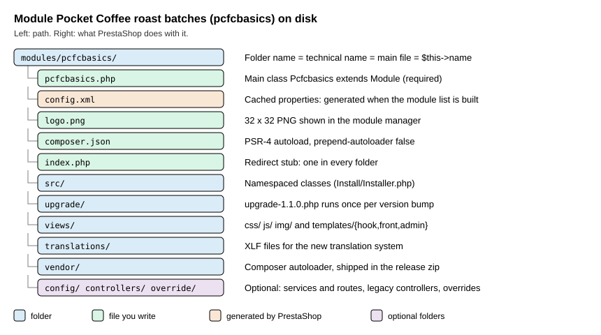

Module Basics
|
This content was generated with the assistance of AI and should be verified against the official documentation before being relied on in production. |
This page was written against PrestaShop 9.2.0 (released on 2026-09-30, Symfony 6.4, PHP 8.1 to 8.5 supported and PHP 8.5.12 in the official Docker image) and checked on 2026-10-27. A module is the unit of extension of a self-hosted PrestaShop shop: it is available on every installation of the open-source edition, there are no plans or editions to choose from, and the same module can be written for 8.x and 9.x with the differences listed below. This page is the first of the module pages. It builds the smallest module that is still useful, explains every file and every attribute that the platform reads, and shows what the platform does on install, upgrade and uninstall. The next pages build on it: Hooks adds behaviour to the storefront and the back office, Module Configuration adds a settings page, Module Services and Admin Controllers adds Symfony controllers, and Module Upgrades, Overrides and Decoration goes deeper on versioning.
The running example is the Pocket Coffee shop. Its first extension is a module called pcfcbasics ("Pocket Coffee
roast batches") that owns one table with the roast date of every batch of beans, two configuration keys, a stylesheet
for the "roast date" badge and two hooks. The module in this page is small on purpose: it has one main class, one
installer class and one upgrade script, and every line of it was installed, upgraded and removed on a real PrestaShop
9.2.0 shop. The technical name starts with pcfc to keep it apart from the other example modules of this section.
What a module is
A PrestaShop module is a folder under modules/ whose main PHP file defines a class that extends Module. The shop
discovers it by scanning the folder, so a module needs no registration file: copying the folder is enough for it to
appear in the module manager of the back office, in the state "not installed". Installing it records it in the
ps_module table, creates its permissions, enables it for the shops in the current context and lets it do its own setup
(tables, configuration keys, hooks, tabs). Everything that a module can do goes through one of four doors:
-
hooks, named extension points in the core and in themes, described in Hooks;
-
its own controllers and templates, front office controllers that extend
ModuleFrontControllerand, since 9.0, back office controllers that are Symfony services; -
services declared in
config/services.yml, which also lets a module decorate or replace core services; -
overrides, copies of core classes placed in
override/, which are exclusive and discouraged (see Module Upgrades, Overrides and Decoration).
A module can also be a payment method (PaymentModule), a carrier, a theme companion or a widget. All of them are
still modules, so everything on this page applies to them.
Naming rules
The folder name, the main file name and the value of $this->name must be the same string, and the main class is that
string in PascalCase. The developer documentation says the technical name may only contain lowercase letters and digits
([a-z0-9]); underscores are accepted but strongly discouraged because they do not work with translation domains. The
core modules that ship with the shop do use underscores (ps_checkout, ps_featuredproducts), so the rule is
"discouraged" and not "forbidden".
| Rule | What the documentation says | What was observed on 9.2.0 |
|---|---|---|
Characters of the technical name |
Only |
|
Folder, main file and |
Must be identical. |
A module whose |
Main class name |
Same as the module, in PascalCase ( |
PHP class names are case-insensitive, and |
Prefix of what belongs to you |
Prefix modules, configuration keys, Smarty variables, tables and CSS classes. |
Used here as |
Zip archive |
The archive must contain a single sub-folder named like the module. |
Not packaged here. |
Folder layout

The next table lists everything the platform reads from a module folder. Only the main PHP file is mandatory.
| Path | Purpose |
|---|---|
|
The main file, named like the folder. It holds the main class. Every PHP file of a module starts with a guard on |
|
A cached copy of the module properties that makes the module list cheaper to build (see config.xml). |
|
The icon of the module list, a 32 by 32 pixel PNG. Use your own artwork or an icon you may redistribute; do not reuse the icon of a core module. |
|
Composer metadata and the generated autoloader. Libraries can live in |
|
The recommended place for namespaced classes: installers, entities, grids, forms, CQRS handlers and Symfony controllers ( |
|
|
|
Legacy-style controllers: |
|
|
|
Translation files; see Module Translations. |
|
Upgrade scripts, one per version, described below. |
|
Core class overrides copied to the shop |
|
A stub that redirects to the parent folder, so a directory listing never shows the contents. |
Since PrestaShop 9.0 calling a PHP file of modules/ directly over HTTP is no longer a supported pattern (the change
"Forbid sensitive files in modules directory"): requests go through a ModuleFrontController. On the 9.2.0 Docker image
the modules/.htaccess file denies requests for .php, .log, .txt, .lock, .json, .yml, .yaml, .tpl,
.twig and config.xml files, and a request for modules/pcfcbasics/pcfcbasics.php returned 403. Static assets such
as views/css/badge.css are still served. This protection depends on Apache honouring .htaccess; on Nginx the same
rules must be written by hand.
The main file and class
The main file has three parts: the guard, the optional autoloader and the class. The class below is the real module, version 1.1.0.
<?php
/**
* Pocket Coffee roast batches: the smallest useful module skeleton.
*/
if (!defined('_PS_VERSION_')) {
exit;
}
if (file_exists(__DIR__ . '/vendor/autoload.php')) {
require_once __DIR__ . '/vendor/autoload.php';
}
use PocketCoffee\PcfcBasics\Install\Installer;
class Pcfcbasics extends Module
{
public function __construct()
{
$this->name = 'pcfcbasics';
$this->tab = 'front_office_features';
$this->version = '1.1.0';
$this->author = 'Pocket Coffee';
$this->need_instance = 0;
$this->ps_versions_compliancy = [
'min' => '9.0.0',
'max' => '9.99.99',
];
$this->bootstrap = true;
$this->dependencies = [];
parent::__construct();
$this->displayName = $this->trans('Pocket Coffee roast batches', [], 'Modules.Pcfcbasics.Admin');
$this->description = $this->trans('Stores the roast date of each bean batch.', [], 'Modules.Pcfcbasics.Admin');
$this->confirmUninstall = $this->trans('Delete all roast batches?', [], 'Modules.Pcfcbasics.Admin');
if (!Configuration::get('PCFCBASICS_FRESH_DAYS')) {
$this->warning = $this->trans('The freshness window is not configured.', [], 'Modules.Pcfcbasics.Admin');
}
}
public function isUsingNewTranslationSystem(): bool
{
return true;
}
public function install(): bool
{
if (Shop::isFeatureActive()) {
Shop::setContext(Shop::CONTEXT_ALL);
}
$installer = new Installer();
return parent::install()
&& $installer->createTables()
&& $installer->createConfiguration()
&& $this->registerHook('displayHeader')
&& $this->registerHook('displayFooterBefore');
}
public function uninstall(): bool
{
$installer = new Installer();
return $installer->dropConfiguration()
&& $installer->dropTables()
&& parent::uninstall();
}
public function hookDisplayHeader(array $params): void
{
$this->context->controller->registerStylesheet(
'module-pcfcbasics-badge',
'modules/' . $this->name . '/views/css/badge.css',
['media' => 'all', 'priority' => 150]
);
}
public function hookDisplayFooterBefore(array $params): string
{
if (!Configuration::get('PCFCBASICS_SHOW_LOT')) {
return '';
}
return $this->fetch('module:' . $this->name . '/views/templates/hook/lot-notice.tpl');
}
}Three details of the constructor are easy to get wrong. The attributes name, tab, version and author must be
assigned before parent::__construct(), because the parent constructor reads name to find the module in the cache and
to load its id. The first call to $this->trans() must come after parent::__construct(), because translation needs
the context that the parent sets up. And the constructor runs every time the module is instantiated, which includes
every listing of the module manager when need_instance is 1, so it must stay cheap: no HTTP calls, no heavy queries.
The attributes the platform reads
| Attribute | Type and default | Meaning |
|---|---|---|
|
string, required |
The technical name; must equal the folder and the main file. |
|
string, required |
The section of the module manager. Known values: |
|
string, required |
The module version, shown in the list and compared with the stored one to decide whether an upgrade is pending. Use semantic versioning with three parts, so that |
|
string, required |
Shown as is in the list. |
|
int, default |
|
|
array |
The range of PrestaShop versions the module accepts. Outside it the installer refuses with "The version of your module is not compliant with your PrestaShop version." Set |
|
bool, default |
|
|
array, default empty |
Technical names of modules that must be installed first. Installation fails with "Before installing this module, you have to install this/these module(s) first" when one is missing. |
|
string |
Name and description of the module list; set them after |
|
string, default empty |
The confirmation text shown before an uninstall in the back office. |
|
string, default empty |
A warning shown in the module list when the module needs attention. |
|
array, default empty |
Restricts the module to countries by ISO code (written to |
|
array, default empty |
Names of the front controllers of the module; on uninstall the shop removes their SEO meta entries. |
|
int constant, default |
One of |
|
string, default empty |
The Addons licence key of a module sold on the marketplace; never commit a real one. |
The method isUsingNewTranslationSystem() returns true so that the module uses translation domains such as
Modules.Pcfcbasics.Admin and standard Symfony XLF files; the translation pages explain the rest. The signature of
trans() on Module is trans($id, array $parameters = [], $domain = null, $locale = null) in 8.2.8 and in 9.2.0.
The deprecated FrameworkBundleAdminController::trans($key, $domain, $parameters) has the domain second; the new
PrestaShopAdminController::trans($id, $parameters, $domain, $locale) uses the standard Symfony order. Code ported from
8.x controllers must be checked for that swapped order.
What install does
parent::install() is not a stub: it is where the module becomes real. The order of its steps explains most
installation errors. Every return false below leaves a message in $this->_errors, which the back office and the
console print.
-
The hook
actionModuleInstallBeforefires and an entry "Starting module install" is added to the log (ps_log, shown under Advanced Parameters, Logs). -
The technical name, the compliancy range and the dependencies are validated.
-
A module that is already in
ps_moduleis refused, and the override files of the module are checked for conflicts with overrides installed by other modules. -
The controllers of the module (
controllers/) are registered, then a row is inserted intops_modulewith the version, and the module is enabled for the shops in the current context (ps_module_shop). -
Four permission roles are created,
ROLE_MOD_MODULE_PCFCBASICS_CREATE,_READ,_UPDATEand_DELETE, and granted to the profiles that may manage modules. These rows were present after install and gone after uninstall. -
Restrictions per customer group are added for every shop,
actionModuleInstallAfterfires, and the module translations are updated.
Your own code in install() therefore runs after the module exists, which is why parent::install() && ... is the
usual shape: if the parent fails, nothing of yours has run. If a step of yours fails after the parent succeeded, the
module is installed but half configured. Wrap multi-step setup in a method that undoes its work, or make every step
idempotent (CREATE TABLE IF NOT EXISTS, Configuration::updateValue) so that reset repairs it.
The installer class
Keeping the setup in a separate class makes install() readable and lets the upgrade script and the tests reuse it.
The class lives in src/Install/Installer.php and is loaded by the Composer autoloader.
<?php
declare(strict_types=1);
namespace PocketCoffee\PcfcBasics\Install;
use Configuration;
if (!defined('_PS_VERSION_')) {
exit;
}
/**
* Creates and removes everything the module owns: its table and its configuration keys.
*/
final class Installer
{
/** Every configuration key the module owns, including keys added by upgrade scripts. */
private const CONFIGURATION_KEYS = [
'PCFCBASICS_FRESH_DAYS' => 21,
'PCFCBASICS_SHOW_LOT' => 0,
];
public function createTables(): bool
{
return (bool) \Db::getInstance()->execute(
'CREATE TABLE IF NOT EXISTS `' . _DB_PREFIX_ . 'pcfcbasics_batch` (
`id_batch` INT UNSIGNED NOT NULL AUTO_INCREMENT,
`id_product` INT UNSIGNED NOT NULL,
`roast_date` DATE NOT NULL,
`lot_code` VARCHAR(32) NULL,
PRIMARY KEY (`id_batch`),
KEY `idx_product_roast` (`id_product`, `roast_date`)
) ENGINE=' . _MYSQL_ENGINE_ . ' DEFAULT CHARSET=utf8mb4'
);
}
public function dropTables(): bool
{
return (bool) \Db::getInstance()->execute(
'DROP TABLE IF EXISTS `' . _DB_PREFIX_ . 'pcfcbasics_batch`'
);
}
public function createConfiguration(): bool
{
$ok = true;
foreach (self::CONFIGURATION_KEYS as $key => $default) {
$ok = \Configuration::updateValue($key, $default) && $ok;
}
return $ok;
}
public function dropConfiguration(): bool
{
$ok = true;
foreach (array_keys(self::CONFIGURATION_KEYS) as $key) {
$ok = \Configuration::deleteByName($key) && $ok;
}
return $ok;
}
}The rules that the example follows come straight from the good-practices page and are worth stating as a checklist:
-
create your own tables and never alter a core table; start
CREATE TABLEwithIF NOT EXISTSandDROP TABLEwithIF EXISTS, so a repeated install or uninstall does not fail; -
build table names with
_DB_PREFIX_, the engine with_MYSQL_ENGINE_, and cast or escape every value you interpolate ((int),pSQL(),bqSQL()) as shown in Database and Entities; -
prefix configuration keys with the module name in upper case (
PCFCBASICS_FRESH_DAYS), store them withConfiguration::updateValue()and remove them withConfiguration::deleteByName(); -
in a multistore shop,
install()first moves the context to all shops (Shop::setContext(Shop::CONTEXT_ALL)), so the defaults are written once for every shop;Shop::isFeatureActive()isfalseon a fresh single-shop install; -
delete in
uninstall()everything thatinstall()and the upgrade scripts created: tables, configuration keys, admin tabs and files written outside the module folder.
The last rule was broken on purpose during development to see what happens. The first version of the installer
removed only PCFCBASICS_FRESH_DAYS, while the 1.1.0 upgrade script had added PCFCBASICS_SHOW_LOT. After a
reset (an uninstall followed by an install) the key PCFCBASICS_SHOW_LOT was still in ps_configuration: a key that
an upgrade script creates is not removed by an uninstall() that does not know it. The list CONFIGURATION_KEYS above is
the fix: install, upgrade and uninstall all read the same list.
Files that a module writes at run time should not go into the module folder: the documentation recommends
var/cache/<env>/modules/<module>/ for cache files and var/modules/<module>/ for static files, because writing under
modules/ makes distributed deployments harder and files outside the module survive an uninstall.
config.xml
config.xml is a small cached description of the module. Its fields are the name, display name, version, description,
author, tab, an optional confirmation text, is_configurable, need_instance and, when the module is limited to a
country, limited_countries. The module list reads this file instead of instantiating the class, which is why
need_instance is 0 here.
<?xml version="1.0" encoding="UTF-8" ?>
<module>
<name>pcfcbasics</name>
<displayName><![CDATA[Pocket Coffee roast batches]]></displayName>
<version><![CDATA[1.1.0]]></version>
<description><![CDATA[Stores the roast date of each bean batch.]]></description>
<author><![CDATA[Pocket Coffee]]></author>
<tab><![CDATA[front_office_features]]></tab>
<confirmUninstall><![CDATA[Delete all roast batches?]]></confirmUninstall>
<is_configurable>0</is_configurable>
<need_instance>0</need_instance>
</module>The documentation says the file is generated when the module is installed. On 9.2.0 the file was not present right
after prestashop:module install; it appeared the first time Module::getModulesOnDisk() ran, which is what the module
manager does when it builds its list (the call was made here from a PHP script with the English language in context).
Plan for both situations. Three practical consequences follow. First, shipping config.xml in the release lets the shop
see the new version number of an updated zip before the module is instantiated, so upgrade scripts can run immediately
after the download. Second, the listing considers the file outdated, and writes it again, when its modification time is
older than the one of the main PHP file; so editing the main file refreshes the copy, but a config.xml that is newer
than the main file keeps being used as it is. Third, the file is written in the language of the context: config.xml
for English and config_xx.xml for the other languages (config_es.xml). is_configurable is not something you set in
the constructor: the listing sets it to 1 when the class has a getContent() method, which is how the module manager
decides to show a "Configure" button.
Composer
Composer gives the module an autoloader, a place for dependencies and an environment check. The composer.json of the
example declares one PSR-4 namespace and, most importantly, turns off prepend-autoloader.
{
"name": "pocketcoffee/pcfcbasics",
"description": "Pocket Coffee roast batches (module skeleton example)",
"type": "prestashop-module",
"license": "AFL-3.0",
"authors": [{ "name": "Pocket Coffee" }],
"require": { "php": ">=8.1" },
"autoload": {
"psr-4": { "PocketCoffee\\PcfcBasics\\": "src/" }
},
"config": {
"preferred-install": "dist",
"prepend-autoloader": false
}
}# regenerate the optimized autoloader; the shop image has no Composer, so use a throw-away container
docker run --rm -v "$PWD:/app" -w /app composer:2 dump-autoload -o --no-devSource: PrestaShop devdocs: Composer
The rules that the documentation insists on:
-
Disable
prepend-autoloader. By default the module’s autoloader is put in front of the core one, so a library bundled invendor/would win over the version PrestaShop itself needs and break the core. Withfalsethe core autoloader keeps priority. -
Ship
vendor/. The shop does not run Composer, so the release zip must contain the generatedvendor/folder. Runcomposer dump-autoload -o --no-devbefore packaging. -
Do not ship development dependencies. PHPUnit, PHPStan and similar tools are
require-devonly; check that they are not in the packagedvendor/. -
The main file requires
vendor/autoload.phponly when it exists, so the module still loads from a source checkout that has not run Composer yet, as in the guard at the top of the main class. -
The conventional namespace is
PrestaShop\Module\<ModuleName>; the example uses its own vendor prefix, which is equally valid. Use a unique prefix: two modules defining the same class name conflict at run time. -
Since 9.0 the legacy
PrestaShopAutoloadclass is gone, and the core no longer ships Guzzle or SwiftMailer. A module that relied on those libraries must require them itself or use the Symfony components that the core ships (symfony/http-client,symfony/mailer).
The upgrade script
When the version stored in ps_module is lower than $this->version, the shop looks in upgrade/ for scripts named
upgrade-x.y.z.php whose version is higher than the installed one and runs them in order. Each file defines a function
upgrade_module_x_y_z($module) that returns true on success. install() is not run again, so everything that the new
version added (schema, configuration keys, hook registrations) belongs in the script.
<?php
if (!defined('_PS_VERSION_')) {
exit;
}
/**
* Runs once when an installed 1.0.x module is updated to 1.1.0.
* install() is not executed again, so new schema, keys and hooks go here.
*/
function upgrade_module_1_1_0($module)
{
return Db::getInstance()->execute(
'ALTER TABLE `' . _DB_PREFIX_ . 'pcfcbasics_batch` ADD COLUMN `lot_code` VARCHAR(32) NULL AFTER `roast_date`'
) && Configuration::updateValue('PCFCBASICS_SHOW_LOT', 0)
&& $module->registerHook('displayFooterBefore');
}The documentation example uses two-part names (upgrade-1.1.php and upgrade_module_1_1); three-part names work as
well and are what this module used. The script above was run against a real 1.0.0 installation: after
prestashop:module upgrade pcfcbasics the table gained lot_code, the key PCFCBASICS_SHOW_LOT existed, the hook
displayFooterBefore was registered and ps_module.version read 1.1.0. A fresh install of 1.1.0 skips the script and
creates the same objects through Installer, which is why the installer and the script must describe the same final
state.
Driving the lifecycle from the console
Every action of the module manager has a console twin, which is the right tool for scripts and CI.
# inside the shop container, as the web server user
php bin/console prestashop:module install pcfcbasics # also: uninstall enable disable reset upgrade configure delete
php bin/console prestashop:module upgrade pcfcbasics # runs the pending upgrade scripts
php bin/console prestashop:module reset pcfcbasics # uninstall followed by install
php bin/console prestashop:module:list # name, version, status of the installed modules
php bin/console prestashop:module:list --all # include the modules that are not installed
php bin/console prestashop:module uninstall pcfcbasics --skip-overrides # do not touch override filesinstall, uninstall, enable, disable, reset, upgrade, configure and delete are the eight actions of
prestashop:module (the optional third argument is a YAML file with configuration for the configure action).
prestashop:module:list appeared in 9.2 and accepts --all, --active, --disabled, --not-installed and
--simple. The same operations are available in the back office under Modules, Module Manager, and by uploading a zip.
The difference between the verbs is worth knowing. Disable keeps the data and the tables, and hooks stop calling the
module. Uninstall runs your uninstall() and then removes the module row, its hook registrations, its permissions and
its group restrictions. Reset is the quickest way to rerun install() during development, but it also runs
uninstall(), so it destroys the data of the module. Delete removes the module folder from disk.
Failure modes that were run
To see the error messages the installer produces, four throw-away modules were created from a ten-line skeleton and installed with the console. They were removed afterwards.
| Defect | Result of prestashop:module install |
|---|---|
|
"The module pcfcbada is invalid and cannot be loaded." The module list shows it under the wrong name. |
|
"The version of your module is not compliant with your PrestaShop version." |
|
"Unfortunately, the module pcfcbadc did not return additional details." Fill |
|
Succeeds from the console: an unknown hook name is created in |
Checks and coding standards
The module was checked with the tools that the 9.2.0 image offers, plus the PrestaShop coding standard run from a separate PHP 8.5 Composer container, because the shop image contains neither Composer nor development tools.
docker exec -u www-data -w /var/www/html ec-prestashop php -l modules/pcfcbasics/pcfcbasics.php
docker exec -u www-data -w /var/www/html ec-prestashop php -l modules/pcfcbasics/src/Install/Installer.php
docker exec -u www-data -w /var/www/html ec-prestashop php -l modules/pcfcbasics/upgrade/upgrade-1.1.0.php
# coding standard (PrestaShop rules for PHP CS Fixer), in a throw-away container
docker run --rm -v "$PWD:/app" -w /app composer:2 sh -c '
composer require --dev -q prestashop/php-dev-tools friendsofphp/php-cs-fixer
PHP_CS_FIXER_IGNORE_ENV=1 vendor/bin/php-cs-fixer fix --dry-run --diff'php -l reported "No syntax errors detected" for the main file, the installer and the upgrade script. The first
run of PHP CS Fixer 3.95.27 with the PrestaShop configuration (.php-cs-fixer.dist.php generated by
prestashop-coding-standards cs-fixer:init) flagged twelve files, all for style: a blank line after the opening tag,
single quotes in the index.php stub, and global classes written with a leading backslash inside a namespace
(\Db, \Configuration). After fix a second dry run reported nothing, and the listings on this page are the fixed
files. The generated phpstan.neon of php-dev-tools 5.0 targets PHPStan 0.12 and did not start under PHPStan 2.x, so
static analysis is not shown here.
Putting it together
The complete sequence of the run that produced this page was: write the files, build the autoloader, copy the folder
into modules/, install, look at the database, switch a configuration key and read the home page, upgrade from a 1.0.0
variant, and uninstall.
php bin/console prestashop:module install pcfcbasics
# ps_module row, hooks displayHeader and displayFooterBefore, ps_pcfcbasics_batch, two PCFCBASICS_* keys, 4 roles
php bin/console prestashop:config set PCFCBASICS_SHOW_LOT --value=1
curl -s http://localhost:8080/ | grep pcfcbasics-lot
# <p class="pcfcbasics-lot">Every bag carries the lot code of its roast batch.</p>
php bin/console prestashop:module uninstall pcfcbasics
# no table, no PCFCBASICS_* key, no role, no hook row leftThe stylesheet registered in displayHeader was found inside the combined theme stylesheet
(themes/hummingbird/assets/cache/theme-*.css) because CCC (combine, compress and cache CSS) is enabled by default on new
shops since 9.0; without CCC the stylesheet is linked on its own. The template used by displayFooterBefore is a Smarty
file:
<p class="pcfcbasics-lot">{l s='Every bag carries the lot code of its roast batch.' d='Modules.Pcfcbasics.Shop'}</p>What changes between 8.x and 9.x for module authors
-
FrameworkBundleAdminControlleris deprecated in 9.0 and removed in 10.0; back office controllers extendPrestaShopAdminControllerand are services (see Module Services and Admin Controllers).$this->get('translator')and$this->get('session')are gone from controllers. -
The legacy product page and 18 of its hooks were removed in 9.0, together with 7 login hooks of the old
AdminLoginController. -
PrestaShopAutoloadis removed; use Composer. Guzzle and SwiftMailer are no longer bundled. -
ps_versions_compliancyshould now read'min' => '8.0.0'(or9.0.0) and'max' => '9.99.99', as the tutorial does. -
PHP 8.1 is the minimum of 9.x, so promoted constructor properties,
readonly, enums andmatchare available; PHP 8.1 itself reached the end of its security support on 2025-12-31 and 8.2 follows on 2026-12-31. -
9.2 adds
services.phpandservices-9.2.ymlas service files and the console commandsprestashop:module:list,employee:create-admin,employee:change-passwordandhtaccess:generate.
What was and was not run
Run on the local PrestaShop 9.2.0 Docker shop (Symfony 6.4.46, PHP 8.5.12, MySQL 8.4): the install, upgrade, reset and
uninstall of pcfcbasics; the inspection of ps_module, ps_hook_module, ps_authorization_role, ps_configuration
and the module table after each step; the front office page with the Smarty hook output; the four failure modes above;
php -l; PHP CS Fixer with the PrestaShop standard. Not run: the module manager upload of a zip, the Addons marketplace
validation (it needs an account), multistore installation with two shops, and PHPStan (see above).